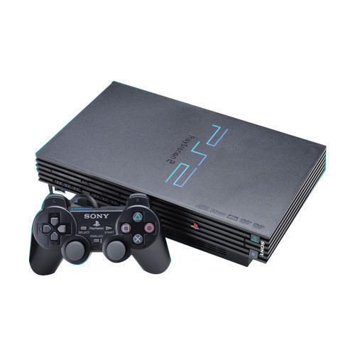
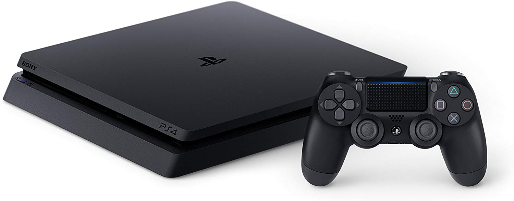

Playstation is a video game console developed by Sony. The first Playstation was released in 1994, followed
by
Playstation 2 (PS2) in 2000 and Playstation 3 (PS3) in 2006. ... PS2 represented another leap in processing
power and game play at its introduction with a CPU capable of 66 million polygons per second.
Category: Video game console
Producer: Sony

What is X BOX?
Xbox is a video gaming brand created and owned by Microsoft. It represents a series of video game consoles
developed by Microsoft, with three consoles released in the sixth, seventh, and eighth generations,
respectively.
Product type: Video gaming
Country: Microsoft Redmond Campus, Redmo...
Owner: Microsoft
Introduced: November 15, 2001; 18 years ago
Which play station is best?
The PlayStation 4 Pro is the best version of the most popular game platform available today. With 4K, HDR 10
compatibility, and the PlayStation 4’s exclusive game library, it is currently the best plug-and-play gaming
platform.
A very large majority of both the PlayStation 4 and Xbox One libraries are available on both platforms.
Though
both platforms have popular exclusive franchises, the PlayStation 4 (Pro or standard) sees more exclusive
games
each year. The PS4 also has access to a small number of less well-known indie games and niche titles, such
as
Japanese role-playing games, that the Xbox One does not.

which X Box is best?
If you're the type of console gamer who buys all the latest, biggest games and wants the best visual
experience
possible, the Xbox One X with a 4K TV is the best option by far this year. If you're a content creator, the
Xbox
One X will provide you with 4K video clips and screenshots as a bonus.Dec 2, 2019
Which is best Play Station or XBox?
Overall Winner: PlayStation 4
Sony has shown stronger support for independent developers so far, and both the current and future game
lineups
look better for PS4 than for Xbox One. Most AAA games these days are released for both consoles, but the
PS4's
list of exclusives easily trumps the Xbox's.